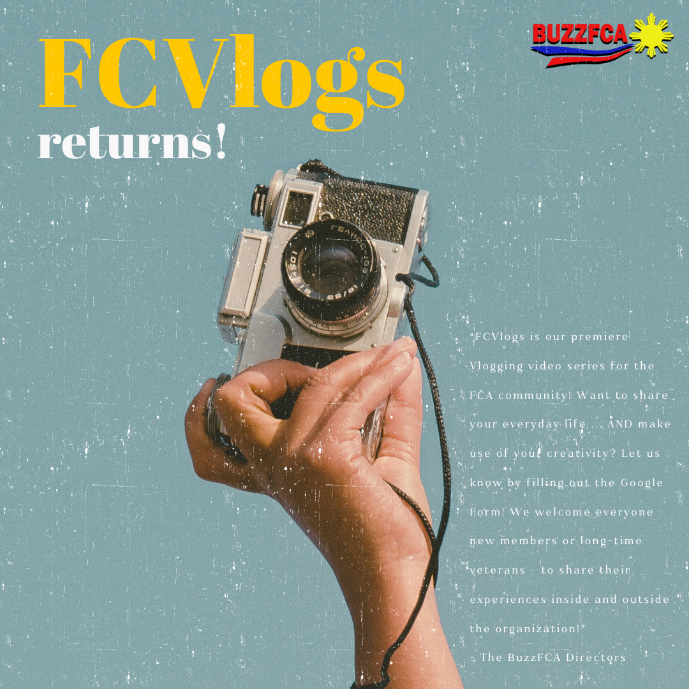

BuzzFCA is the content creation subgroup of the
Filipino Cultural Association at the University of Maryland College Park (FCA),
of which I was a co-director for 2024-2025. Our mission was to highlight the general body of FCA in our videos and give them opportunities
to take part in the content creation process themselves, as shown by our mission statement “For gen bod, by gen bod.”
is the content creation subgroup of the
Filipino Cultural Association at the University of Maryland College Park (FCA),
of which I was a co-director for 2024-2025. Our mission was to highlight the general body of FCA in our videos and give them opportunities
to take part in the content creation process themselves, as shown by our mission statement “For gen bod, by gen bod.”
Co-Director
Content Creation
Videography
Graphic Design
I had multiple responsibilities as a co-director. Specifically, I helped come up with video ideas for our YouTube and Instagram platform. For ideas that all co-directors agreed on, we went into planning the video shoot, listing the equipment we need and our general timeline. Afterwards, we shot the video, then started editing. I was the main graphic designer behind most of the thumbnails for our videos and Instagram posts, which I created in Canva and Photoshop.
One of the main things I wanted to do as a co-director was bring back BuzzFCA’s old video series FCVlogs.
We would give interested members of FCA's general body a camera for a day and let them film their day.
If they wanted, they could also edit their footage, or one of the co-directors could do it for them.
I always felt this aligned perfectly with our mission statement in that it gave people experience not just in
front of a camera, but also behind, something that was much less common in our video ideas.
To announce FCVlogs' return, I wanted to do something more than the usual verbal announcement during FCA general body
meetings, so I decided to make a commercial we could show instead. I aimed to give it a vintage feel, so I watched many
commercials from the late 20th century, making note of patterns like slow camera zooms and narrators presenting problems
solvable by the advertised product. This went on to inform my story-boarding and scripting. For shooting, I made a list
detailing the most efficient order to shoot the shots, based on the person needed, the location, and the camera angle. Check it out below!
We also announced it on our Instagram. I designed the following thumbnail for it. Keeping with the vintage theme, it was inspired by late 20th century advertisements, which were more text heavy and had this grittier, faded texture.
FCA's members really enjoyed FCVlogs! There are a few videos from some very cool people that we released. I'm personally truly grateful that I was able to uplift the FCA community's creativity during my time as a director!